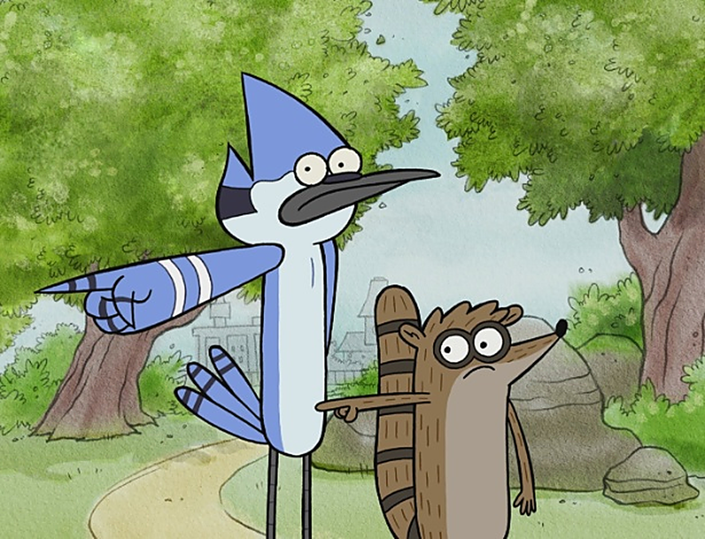

Front-end
HTML, CSS, JavaScript e desenvolvimento de interfaces web.
A Residência Fullstack 5.0 prepara novos talentos para os desafios do desenvolvimento de software por meio de aprendizagem prática, projetos e colaboração.
Conheça a ResidênciaA Residência Fullstack 5.0 é uma capacitação voltada ao desenvolvimento de conhecimentos e habilidades na área de tecnologia.
Durante a formação, os participantes têm contato com diferentes tecnologias e conceitos utilizados no desenvolvimento de aplicações, além de atividades práticas e projetos colaborativos.
HTML, CSS, JavaScript e desenvolvimento de interfaces web.
Lógica de programação, Java, APIs, Spring Boot e desenvolvimento de sistemas.
SQL, PostgreSQL, modelagem e manipulação de dados.
Git, GitHub, metodologias ágeis, trabalho em equipe e projetos.

O Instituto de Pesquisas Eldorado atua no desenvolvimento de soluções tecnológicas e na formação de profissionais para o mercado de tecnologia.
A instituição desenvolve projetos em diferentes áreas e promove iniciativas de capacitação, conectando conhecimento, inovação e prática.
Conheça o EldoradoColoque seus conhecimentos em prática desenvolvendo soluções e enfrentando problemas reais.
Aprenda a colaborar, comunicar ideias e construir soluções junto com outras pessoas.
Desenvolva habilidades técnicas e comportamentais importantes para a sua trajetória profissional.
Passe o mouse ou navegue pelo teclado sobre cada símbolo para saber para que ela serve.